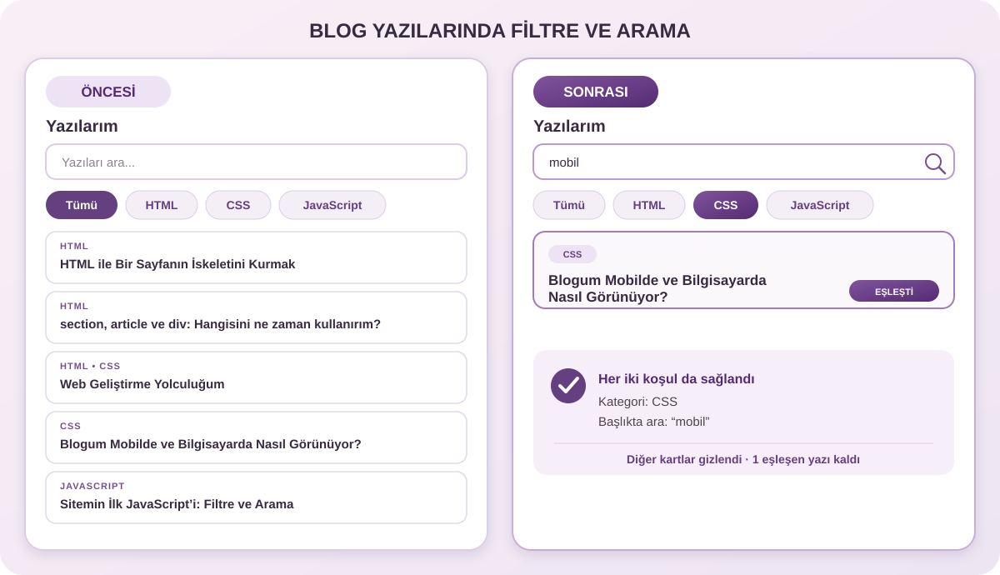

JAVASCRIPT • ÖĞRENME NOTLARI
Sitemin İlk JavaScript’i: Filtre ve Arama
Yazılar sayfamda ziyaretçilerin ilgilendikleri konuları bulabilmesi için kategori filtreleri ve başlık araması ekledim. Bu yazıda, özelliğin blogumda nasıl çalıştığını öğrendiklerimle birlikte anlatıyorum.
JavaScript ile tanışmam
HTML sayfanın içeriğini, CSS ise görünümünü oluşturuyor. JavaScript ile sayfaya etkileşim ekleyebiliyorum. Blogumda ziyaretçi bir kategoriye tıkladığında veya arama alanına yazdığında yazı kartlarının değişmesi bunun bir örneği.
document.querySelectorAll(".yazi-karti") sayfadaki tüm yazı kartlarını buluyor. Benzer şekilde querySelectorAll(".yazi-filtre-dugmesi") kategori düğmelerini seçiyor. Sonuç, seçilen elemanları sırayla dolaşabileceğim bir listedir.
Bu eleman listelerini const ile tanımlıyorum; çünkü bulduğum kartların ve düğmelerin referansını sonradan başka bir değerle değiştirmiyorum. Buna karşılık aktif kategori kullanıcı seçim yaptıkça değiştiğinden let secilenKategori = "tumu" olarak tutuluyor.
Kategoriye göre filtreleme
Her kartın HTML etiketinde kategori bilgisi bulunuyor. Örneğin data-etiket="html css" olan bir kart iki kategoriye de ait. JavaScript bu özel veriye kart.dataset.etiket ile ulaşıyor; boşlukla ayrılmış değerleri split(" ") ile listeye çeviriyor.
Kartları forEach() ile tek tek geziyorum. Seçilen kategori kartın kategori listesinde var mı diye includes() ile kontrol ediyorum. “Tümü” seçiliyse kategori koşulunu aramıyorum; başka bir kategori seçiliyse yalnızca o kategoriyle eşleşen kartlar kalıyor.
Seçilen kategori bilgisini let ile tutmamın nedeni, kategori düğmelerine tıklandığında bu değeri güncellemem. Her düğmeye eklediğim addEventListener("click", ...) tıklama olayı bu değişikliği ve filtreleme işlemini başlatıyor.
Başlıkta arama
Arama alanını document.querySelector("#arama") ile seçiyorum. addEventListener("input", ...) sayesinde ziyaretçi her yazı girdiğinde arama yeniden çalışıyor; ayrıca bir arama düğmesine basması gerekmiyor.
Yazılan metni ve kartın h2 başlığını toLocaleLowerCase("tr") ile Türkçe yerel ayarına göre küçük harfe çeviriyorum. Böylece Türkçedeki büyük-küçük harf dönüşümleri doğru ele alınıyor. Ardından includes(), aranan metin başlığın içinde geçiyor mu diye bakıyor. Bu arama yazı açıklamalarında değil, başlıklarda yapılıyor.
Filtre ve aramanın birlikte çalışması
kartlariFiltrele() adlı fonksiyon, seçili kategori ile arama metnini aynı anda kontrol ediyor. Bir kartın görünmesi için kategori koşulunun ve başlık arama koşulunun ikisi de doğru olmalı. Kategori değiştiğinde de arama alanına yeni bir şey yazıldığında da aynı fonksiyon tekrar çağrılıyor.
Sonucu kart.hidden = !(kategoriEslesiyor && aramaEslesiyor) ile uyguluyorum. İki koşul da karşılanmıyorsa hidden özelliği kartı görünümden kaldırıyor. Eşleşme yoksa sayfadaki durum mesajı da gösteriliyor.

Karşılaştığım sorunlar ve çözümler
Bu özellik üzerinde çalışırken karşılaştığım belirli bir hata hakkında doğrulanmış bir bilgim yok; bu yüzden yaşamadığım bir sorunu yaşanmış gibi anlatmıyorum. Öğrenme sürecinde dikkat ettiğim nokta, her JavaScript adımının HTML’deki karşılığını bulmak ve kategori bilgisi, arama alanı ve başlıkların birbiriyle nasıl ilişkilendiğini takip etmek.
Bir hata ile karşılaştığımda hangi olayın tetiklendiğini ve ilgili değişkenin hangi değeri taşıdığını kontrol ederek ilerlemeyi planlıyorum. Böylece çözümü tahmin etmek yerine, kodun o anda ne yaptığını anlamaya çalışabilirim.
Sonuç
Yazılar sayfamdaki filtre ve arama, JavaScript’in HTML elemanlarını seçip kullanıcı etkileşimlerine göre değiştirebildiğini gösteriyor. querySelectorAll(), olay dinleyicileri, kategori verileri ve hidden gibi kavramları gerçek bir blog özelliğinde bir arada kullanmayı öğreniyorum. Daha iyi anlamak için bu özelliği geliştirirken denemeye ve pratik yapmaya devam edeceğim.